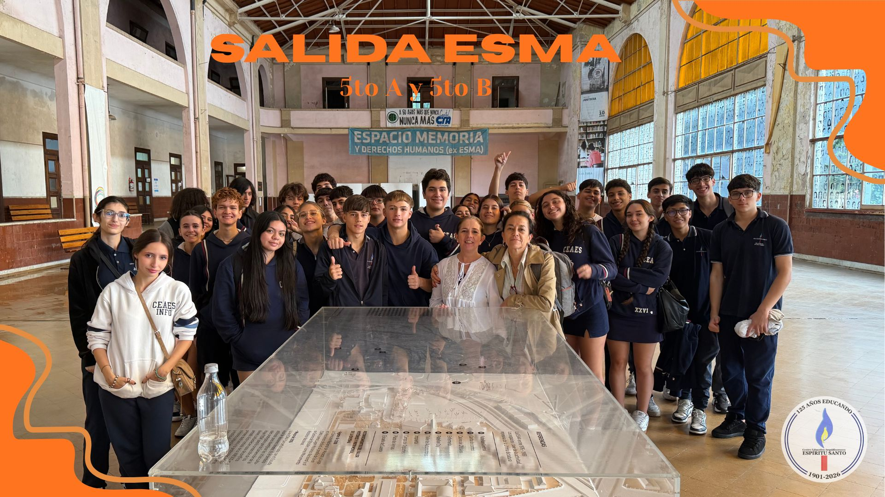
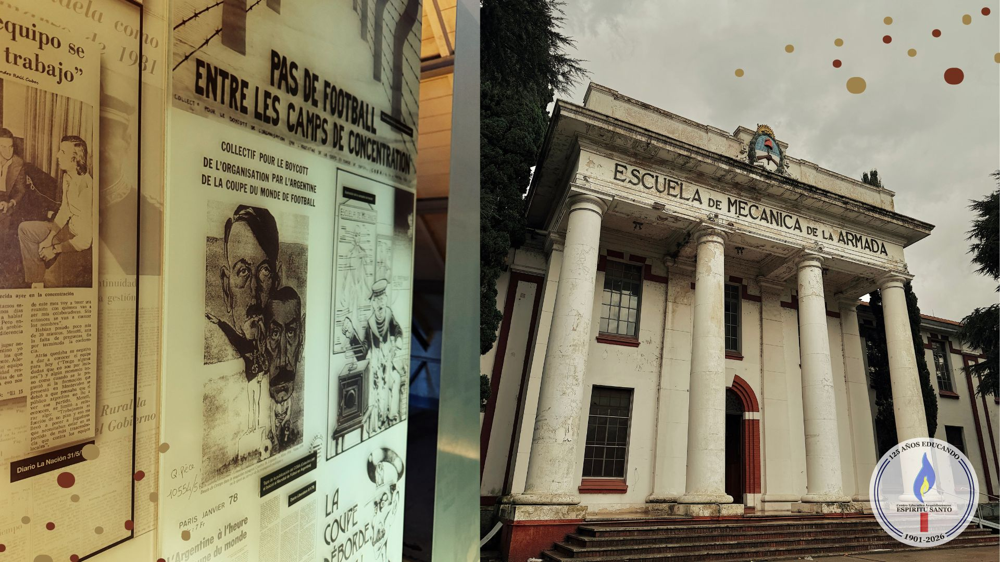

Visita a la ex ESMA (Escuela Mecánica de la Armada)
Por: Micaela Pochelu y Victoria Vega

Participaron los alumnos de 5°A y 5°B.
El día 15 de abril los estudiantes de los quintos años del nivel secundario participaron en un recorrido por el museo de la Escuela Mecánica de la Armada (ESMA), junto con las docentes Karla Pérez Monet y Griselda Orellano, donde visitaron varios edificios y lugares históricos.
Esta salida didáctica fue especialmente informativa, haciendo gran énfasis sobre la dictadura militar ocurrida hace 50 años.
Los lugares más destacados del recorrido fueron: el ático, donde se mantenían detenidas a las personas y el sótano, donde ocurrían las torturas de las mismas. Durante la salida, también nos comentaron acerca de la historia detrás de este sitio y las cosas siniestras que ocurrían dentro.
Otra cosa a destacar fue que, el ático estaba lleno de folletos y noticias de aquella época, mostrándonos aún más todas las barbaridades que ocurrían y todas las víctimas que hubo. También, había muros, donde había información de todo lo que se veía.
Entre aquellas cosas que se veían, las más aterradoras fueron los dibujos hechos a mano en las paredes del lugar. El más destacado de todos muestra una cara sin identificar.
Por último, tambien vimos uno de los aviones recuperados que eran utilizados para los "Vuelos de la muerte", misiones donde ejecutaban a las personas bajo cautiverio. La salida fue muy interesante para nosotros por el conocimiento de los acontecimientos ocurridos durante la Dictadura. Ver las condiciones a las que eran sometidas tantas personas fue muy impactante.
